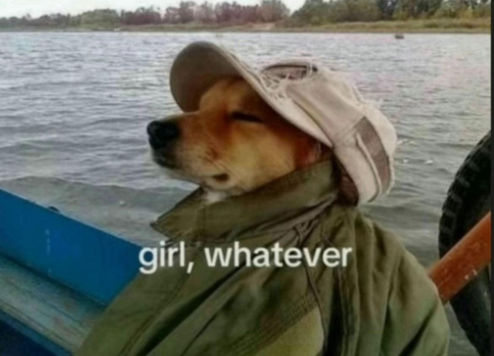
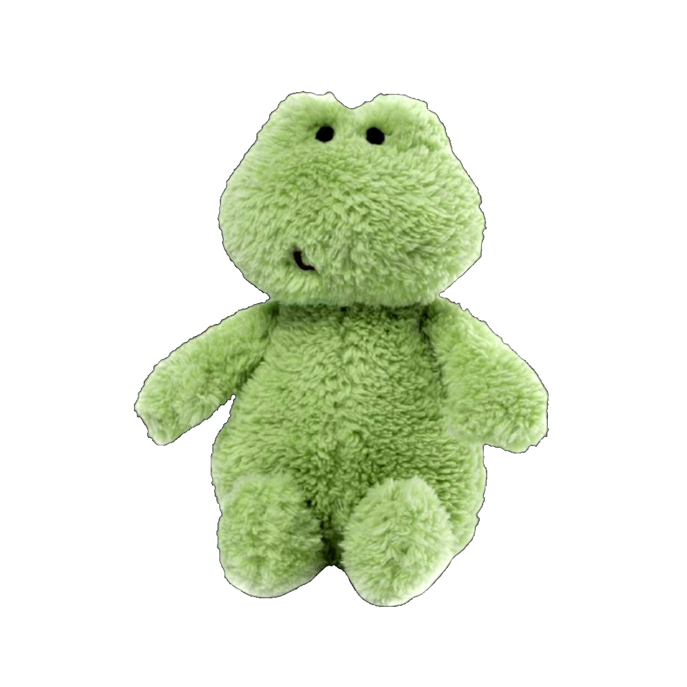
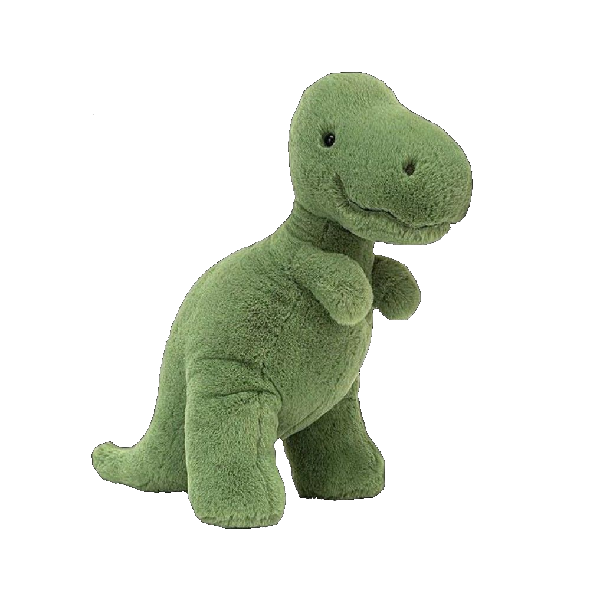
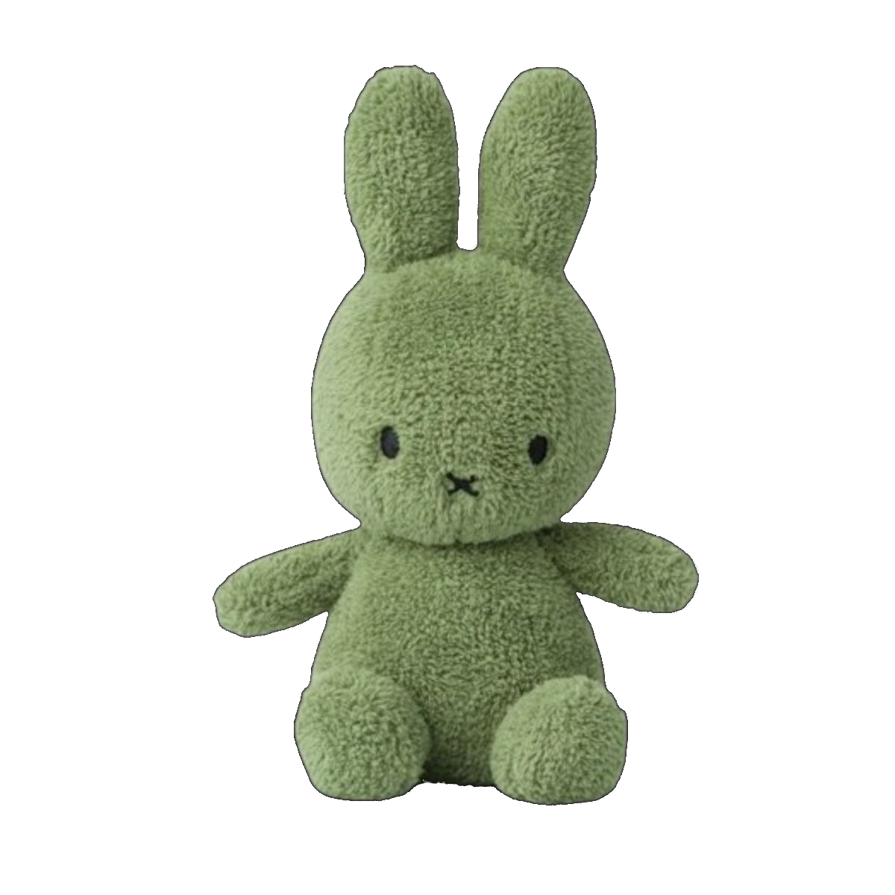

Мне близок спокойный, вдумчивый подход без спешки и давления
Я рассматриваю карты как язык символов, через который можно лучше понять себя и своё текущее состояние
В работе я опираюсь на архетипы, образы и ассоциации, а также помогаю понять текущее состояние
Я не даю жёстких интерпретаций и не навязываю смыслы
Правильных или неправильных вопросов и ответов нет. Можно просто прийти с ощущением, что "что-то не так", этого уже будет достаточно
Я делаю расклад и оформляю его в виде текста: с интерпретацией, образами и возможными смыслами.
Это формат, к которому можно возвращаться и перечитывать.

Живой формат, в котором мы вместе смотрим на твой запрос через карты и обсуждение.
Я вытягиваю карты, проговариваю образы и интерпретации, а ты можешь сразу откликаться, уточнять и задавать вопросы.

Телесная практика, в которой через контакт с ощущениями можно лучше почувствовать себя, свои границы и внутренние реакции.
Это способ замедлиться, остаться в моменте и наблюдать за тем, что происходит внутри.

*Практика не является медицинской или психотерапевтической услугой и не заменяет обращение к специалистам, а также не проводится при наличии противопоказаний